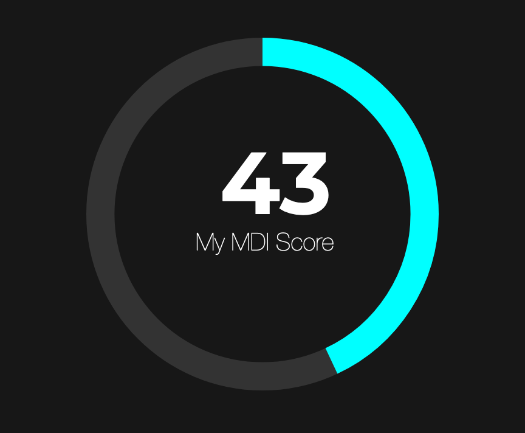
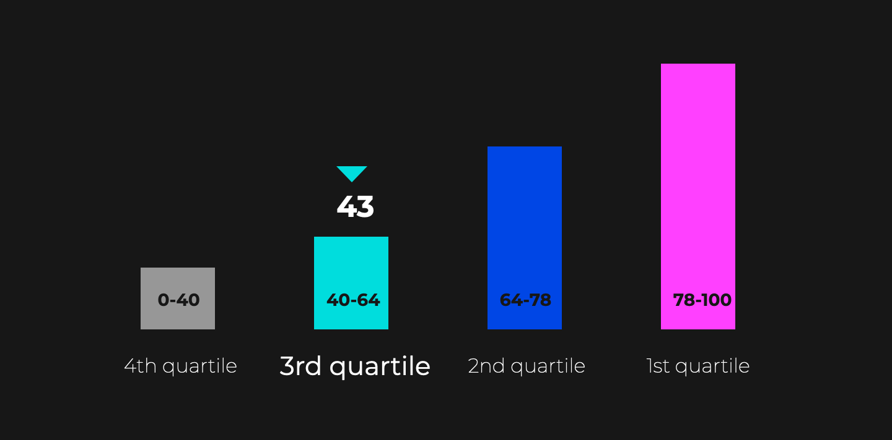

Ian Ovenden
Senior UI Developer - Pega
When did I join Pega?
April 9th 2018
Why did I join Pega?
A fresh challenge
Getting back into the software industry
Opportunity to work on multiple projects
Travel
Why am I a good fit for the XD Consultancy Manager role?
Educational background
Applied Psychology and Computing degree focused on Experience Design
Technical ability
I have been working as a Web Developer in various roles for almost 20 years
A deep Passion for the web
A drive to encourage others to meet their potential
Mentoring
Enthusiasm
Delegation
Collaboration
Experience managing a diverse, globally located team
Well rounded
I believe these core skills and tenets, along with solid organisation and communication skills mark me out as a strong candidate for the positon
McKinsey Design Index Survey Results
 
Why did Pega recieve this score?
A disconnect between product and delivery teams
Perceived limitations of the platform restrict innovation
Bloated, legacy codebase leads to technical inefficiencies
Not all employees recognise importance of design and can be dismissive
Ideas for how we can improve?
Development roadmap will improve many areas e.g. DX API and FnX
Closer engagement between product and delivery teams. Cross-team workshops
Brown bag sessions/role shadowing to improve understanding of discreet roles
Implementation of design metrics when evaluating client success
Ensure XD representation on all projects
Areas for success
Whilst all areas are important, I would prioritise as follows...
4. User Experience
I believe Pega are fairly mature in this area
Journey Centric Delivery model ensures focus on customer journeys regardless of physical/digital bounds
The momentum of Design Thinking
3. Analytical Leadership
Pega is already making progress in this area
Design presence growing in leadership roles
Move to an As-a-Service company
Focus on initiatives to reward client success above utilization (design metrics)
Can grow organically through investment in other areas
2. Continuous Iteration
With the move to an As-a-Service company, continuous iteration will be more valuable than ever
Large license deals replaced by client centered relationships and smaller incremental releases based on quantitative and qualitative data from user testing
Constantly improving a product is more efficient than wholesale "big bang" approach. Less risk, quicker ROI, leading to stronger client relationships
1. Cross-functional talent
Design needs to be owned by the whole team
Working on a long, large project has seen other members of the team learn about the importance of design. Knowledge that can be taken forward to other projects
There have been improvements e.g. cross training BAs in Design Thinking